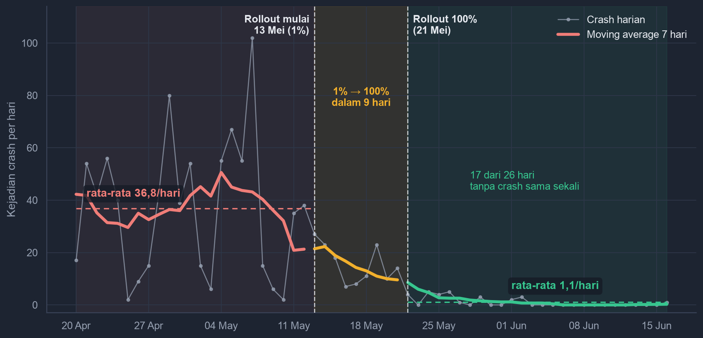
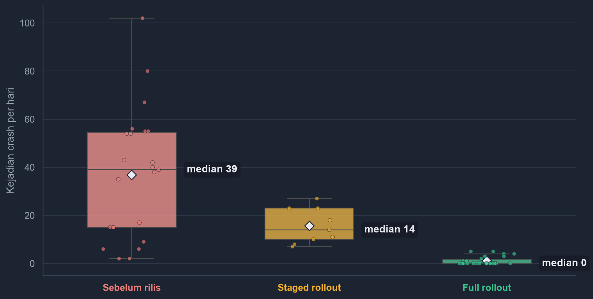
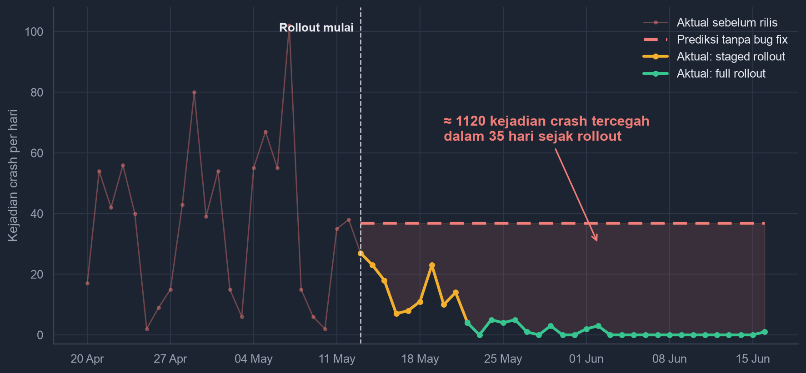
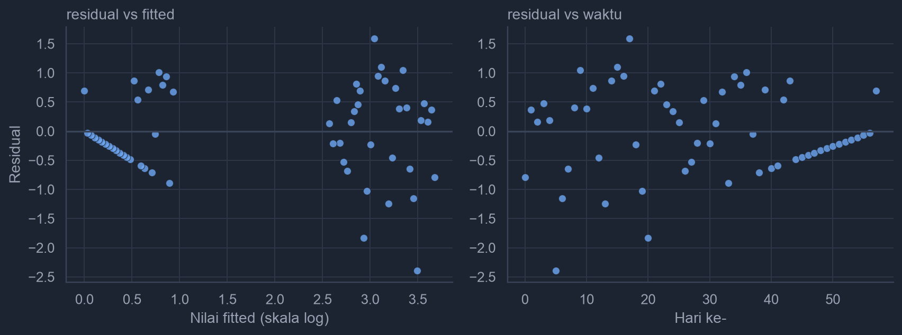

Laporan ALP · Statistika dan Probabilitas · UC Online
Evaluasi Efektivitas Bug Fix
terhadap Tingkat Crash
Studi kasus background upload service pada aplikasi mobile pengumpulan data lapangan — 58 hari data produksi, dianalisis pada taraf signifikansi α = 5%.
Dosen Pengampu: Christopher Andreas, S.Stat., M.Stat., CDSS.
01 · Latar Belakang & Pertanyaan Bisnis
Crash upload menghantam ratusan user, lalu sebuah bug fix dirilis bertahap
Masalahnya
Pembatasan foreground service Android membuat background upload service kerap gagal dan crash: sinkronisasi tertunda, ada risiko data lapangan hilang, dan jenis crash ini paling sering muncul di dashboard monitoring.
Perbaikannya
Tim developer merilis bug fix lewat staged rollout: mulai 13 Mei 2026 ke 1% user, naik bertahap 2% → 5% → 10% → 20% → 50%, hingga mencapai 100% pada 21 Mei 2026.
Pertanyaan bisnis
Benarkah bug fix menurunkan tingkat crash secara signifikan, ataukah penurunan yang teramati hanya fluktuasi harian biasa? Dirumuskan sebagai hipotesis: H0 bug fix tidak menurunkan crash vs H1 bug fix menurunkannya, diuji pada α = 5%.
02 · Data & Tiga Fase Rollout
58 hari data produksi, terbagi tiga fase mengikuti jadwal rollout
Pada fase staged rollout populasi user tercampur antara yang sudah dan belum menerima perbaikan, sehingga fase ini dipisahkan. Perbandingan utama: fase sebelum rilis vs fase full rollout. Lebar balok di atas proporsional terhadap jumlah hari.
03 · Statistika Deskriptif
Crash harian anjlok 97,1% setelah rollout mencapai 100%

- median 39 → 0
- total events 847 → 28
- user terdampak 362 → 16
- 17 dari 26 hari terakhir nol crash
04 · Pola Dose-Response
Makin luas rollout, makin rendah crash: median 39 → 14 → 0

05 · Statistika Inferensi · α = 5%
Empat pengujian, satu keputusan: tolak H0
μpenuh ≥ μsebelum — bug fix tidak menurunkan rata-rata crash harian
H₁μpenuh < μsebelum — bug fix menurunkan rata-rata crash harian (uji satu arah)
hipotesis pendukung: staged rollout < sebelum · μ_penuh < 5 (threshold toleransi operasional)06 · Analisis Regresi Variabel Dummy
Efek bug fix tetap signifikan setelah tren waktu dikontrol
M1 · events ~ fase (skala mentah)
- R² = 0,49 · koefisien = selisih rata-rata antar fase
- Staged rollout: −21,16 crash/hari (p = 0,0027)
- Full rollout: −35,75 crash/hari (p = 1,3×10⁻⁹)
Model interpretatif: dampak tiap fase terbaca langsung.
M2 · log(events+1) ~ fase + hari
- R² = 0,76 pada skala log · varians distabilkan
- Efek full rollout tetap signifikan: −79% (p = 0,008)
- Residual normal (Shapiro p = 0,172) · model sehat
Robustness test: tren waktu ikut dikontrol.
07 · Simulasi What-If
Tanpa bug fix diprediksi ±1.289 crash — kenyataannya hanya 169

- ≈ 1.120 crash tercegah dalam 35 hari
- baseline: rata-rata fase sebelum rilis (tanpa tren, p = 0,993)
08 · Kesimpulan & Rekomendasi
Bug fix efektif — issue layak ditutup
Kesimpulan
- Rata-rata crash turun 97,1% (36,83 → 1,08 per hari), signifikan pada α = 5%.
- Level crash sudah di bawah threshold toleransi 5/hari (p = 9,1×10⁻¹²), praktis mendekati nol.
- Tiga jalur analisis (deskriptif, inferensi, regresi) konvergen, diperkuat pola dose-response.
Rekomendasi
- Pasang monitoring alert: crash harian > 6, atau ≥ 5 selama dua hari berturut-turut.
- Formalisasi alur analisis ini sebagai template evaluasi bug fix berskala besar.
- Pengembangan: regresi Poisson / negative binomial dan interrupted time series.
Laporan ALP · Statistika dan Probabilitas
Terima kasih.
Muhammad Wyndham Haryata Permana · 1076012524906
Laporan lengkap, notebook analisis, dan data tersedia untuk ditinjau.
Lampiran teknis untuk sesi tanya jawab ada di slide berikutnya ↓
Lampiran A · Uji Asumsi & Sensitivitas
Asumsi diperiksa, kesimpulan tahan digoyang
Shapiro-Wilk · sebelum rilis
Konsisten dengan distribusi normal.
p = 0,125 → NormalShapiro-Wilk · full rollout
Tidak normal karena nilai menumpuk di nol → gunakan Welch + Mann-Whitney.
p = 1,7×10⁻⁶ → Tidak normalLevene · kesamaan varians
Varians kedua fase sangat timpang → koreksi Welch diperlukan.
p = 4,4×10⁻⁸ → Tidak homogenSensitivitas batas fase
Batas full rollout digeser ±3 hari (19–25 Mei): seluruh p-value tetap jauh di bawah 5%.
semua p Welch ≤ 1,6×10⁻⁶Framing lama
Bila fase staged digabung ke kelompok sebelum, kesimpulan tidak berubah.
p = 6,2×10⁻⁸ → tetap tolak H0Effect size
Selisih 35,75 crash/hari dengan CI 95% [24,20 ; 47,30].
Glass's Δ = 1,34 · rank-biserial = 0,96Lampiran B · Kesehatan Model & Keterbatasan
Residual M2 tersebar acak di sekitar nol

- Shapiro residual p = 0,172 → normal
- Durbin-Watson 1,45 → autokorelasi ringan
- garis diagonal = artefak hari bernilai nol pada data hitungan